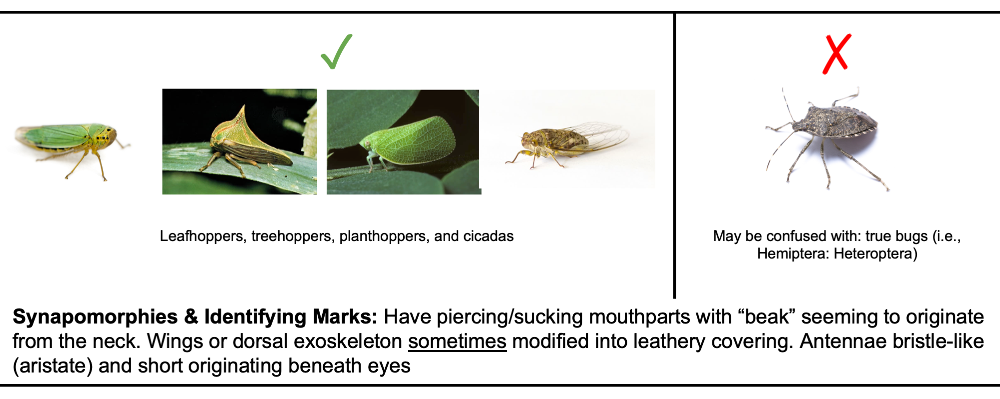

19 Herbivores, Mines, and Galls
19.1 Overview
Though a lower priority than the damage data, these data will permit us to pilot some more mechanistic questions about the distribution of herbivory (e.g. spatial aggregation of herbivores). So far, observers have been recording as much herbivore data as they can via a quick visual survey; however, this may not be feasible for all observers or systems.
For all plants, record the number of leaf mines and galls on the entire plant. If there are too many to count individually, please estimate (for example, by counting the number present on some module of the plant [e.g., a branch] and multiply by the number of modules).
Separate from counting mines and galls, please also collect insect herbivore data if you are confident in insect ID (see below for specifics).
19.2 Protocol
19.2.1 Deciding whether to sample “core” herbivores.
Please use the following questions to help you decide whether to sample “core” herbivores.
Are you comfortable distinguishing the following 5 groups of herbivores? If not, prioritize another herbivory survey (see the Primary Protocol).
Grasshoppers/crickets/katydids (Orthoptera).
Caterpillar-like larvae (i.e., eruciform larvae). Note: this includes moth/butterfly caterpillars, sawfly (Hymenoptera: Symphyta) larvae, and some beetle larvae but does not include larval true flies (i.e., maggots)
Aphids (Aphididae)
Hoppers (Hemiptera: Auchenorrhyncha). This includes planthoppers (Fulgoromorpha), leafhoppers (Cicadellidae/Cercopidae), treehoppers (Membracidae), & cicadas (Cicadidae). If you are confident, you may also identify non-”hopper” Auchenorrhynchans in the column provided in the template Excel file
Non-Aphid Sternorrhynchans. This includes whiteflies, scale insects, and mealybugs
Are you confident that you can visually detect the herbivores on the selected plant species, considering the complexity of plant structure? If not, prioritize another herbivory survey (see the Primary Protocol). If you have the ability to sample herbivores in another way (e.g., a beat-sheet) and feel excited about this, feel free – but be judicious of the added time required for sorting through a loaded beat-sheet!
Could you do another herbivory survey with the time required to conduct an herbivore survey? If yes, prioritize another herbivory survey (see the Primary Protocol). If not, please collect herbivore data!
19.2.2 Sampling insects beyond “core” herbivores.
In an effort to standardize the insect data we have included 5 groupings to use for tallying herbivores. This is to avoid counting insects which may be predatory, rather than herbivorous (e.g., “true bugs”). Please prioritize counting herbivores belonging to the 5 aforementioned groups (see visual guide below if needed).
Please indicate whether you are recording herbivores as a count or as presence/absence data (see “insectUnit” in the “herbivoreData” tab of the template Excel file)
For both core and non-core insects, please herbivorous count insects whether or not they are actively feeding. You are welcome to make a note of their behavior in the “notes” column but all potential herbivores on the plant should be included in your survey
If you have more intimate knowledge of insect herbivores (e.g., can distinguish herbivorous true bugs from predatory), please add columns for these other insects in the “herbivoreData” tab of the template Excel file.
To facilitate this, we have added “beetleHerbivore”, “thysanopteraHerbivore”, “gastropod”, “stemBorers”, and “heteropteraHerbivore” to the template digital datasheet but you are welcome to add other columns as needed.
We also recognize that herbivore surveys may differ dramatically among sampling sites and have modified our printable datasheet for this survey to include an “Insect ID” column rather than predefined columns
- Please continue to record the 5 required insects (even when there are none please put a zero)
While mines/galls are recorded in the Primary Protocol, mine-/gall-forming insects should be counted here if you have the time and identification ability to search within galls/mines for insects
19.3 Herbivore Guide
19.3.1 Mines & Galls Visual Guide

How do you count multiple mines? It’s a confusing picture but in that way is more likely something that would be seen in the field! One of our gall gurus (Eric LoPresti) thinks this is probably two mines. He says, “the one that terminates at the top in a blotch and the one that terminates at the bottom center in a wider figure 8 - looks confusing since the bottom one doubled back, making a weird hanging trail. But you can tell that it is a single mine, since there is no nearby really thin trail where it starts. The intermediate width mine on the right is odd - whether it was aborted/eaten or doubled back is not obvious to me, however, I suspect it is the latter, as I only see two really thin sections, both on the upper half, which indicates a start and a very small caterpillar.”
This can get confusing, but do your best. Each count doesn’t have to be exactly right; we should still be able to get a representative count of the distribution of damage & mine frequencies. If in doubt with these serpentine mines, standardize by counting only the blotchy/expanded mine ends; this will ignore (but in a consistent way) aborted or re-started mines. Make a note of this in the data if you choose this method.
19.3.2 Leaf Mines – Blotch Mines

19.3.3 Galls – Leaf Galls
19.3.4 Galls – Stem/Branch Galls
19.4 Insect Herbivore ID Visual Guide
Some groups of insects (e.g. Hemipterans, Coleopterans) include predatory, herbivorous, and omnivorous species - and it can be challenging to tell the two groups apart. Other groups are more certain to be herbivores. Use this visual guide to identify insects within the five core groups.
19.4.1 Grasshoppers / crickets / katydids (Orthoptera)

19.4.2 Caterpillar-like (larval forms ONLY)
19.4.3 Hoppers (Hemiptera: Auchenorrhyncha)

19.4.4 Aphids (Hemiptera: Aphididae)

19.4.5 Non-Aphid Sternorrhynchans (whiteflies, mealybugs, scale insects)